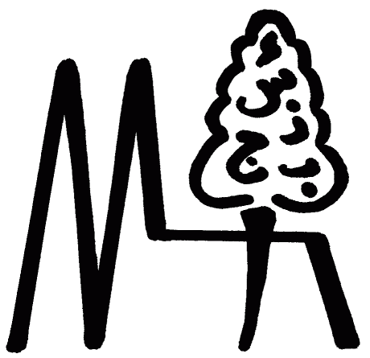

Documentation of
padt
TrEd extension
(Prague Arabic Dependency Treebank Annotation)
Table of contents
Analytic - Context for Annotation of Analytical Syntax in the TrEd Environment
DeepLevels - Context for Annotation of Tectogrammatics and Deeper Levels in the TrEd Environment
ElixirFM - Context for Annotation of the ElixirFM Lexicon in the TrEd Environment
MorphoTrees - Context for Annotation of Morphology in the TrEd Environment
PhraseTrees - Context for Annotation of Constituency Syntax in the TrEd Environment
DeeperFS - Generating DeepLevels given a list of input Analytic documents
MorphoFS - Generating MorphoTrees given a list of input XML/SGML documents
SyntaxFS - Generating Analytic given a list of input MorphoTrees documents
WhiteTXT - White-space delimited textual data reflecting input XML/SGML documents
PlainTXT - Variant-free white-space delimited textual data reflecting input XML/SGML documents
MListsFS - Generating MorphoLists given a list of input XML/SGML documents
ParserFS - Generating Analytic given a list of input MST-parsed documents
MTPennFS - Generating MorphoTrees given input XML/SGML documents and POS annotations of the Penn ATB
PhraseFS - Generating PhraseTrees given a list of input Tree/Text documents